ย่านนอกกำแพง
ดูบนแผนที่และวิธีไป วางแผนฟาร์ม
ทุ่งในเมืองหอระฆัง · Lv 68–82
ชั้นล่าง / ดันเจี้ยน
เดินต่อไป
มอนในแมพ (5)
| มอน | Lv | ธาตุ | โซน |
|---|---|---|---|
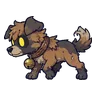 หมาจรเมืองหลวง | 68–80 | ไม่มีธาตุ | หน้าประตูเมือง |
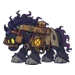 ม้าลากเกวียนกลวง | 72–82 | มืด | หน้าประตูเมือง |
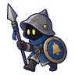 ยามกลวง | 72–82 | มืด | หน้าประตูเมือง |
| กัปตันอัลดริก บอสเนื้อเรื่อง | 80–80 | ไม่มีธาตุ | |
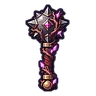 ร็อค ยามประตูที่ไม่เคยเปลี่ยนเวร บอสผู้ถูกรากสิง | 84–84 | ดิน |
อุปกรณ์ที่ดรอปในแมพนี้
| ของ | โอกาสสูงสุด |
|---|---|
| โล่หอคอยเมืองร้าง | 1% |
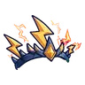 มงกุฎจ้าวพายุ | 1% |
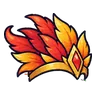 มงกุฎขนนกไฟ | 1% |
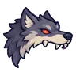 หัวหมาป่าจันทร์เลือด | 1% |
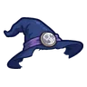 หมวกแม่มดจันทร์เต็มดวง | 1% |
| โล่อัศวินกางเขนทอง | 1% |
| กระบองหนามรากดำ | 0.5% |
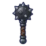 กระบองลูกตุ้มหนาม | 0.25% |
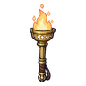 คบเพลิงทองเหลือง | 0.25% |
| ชุดเมฆราตรี | 0.15% |
| ชุดนักปีนเขา | 0.15% |
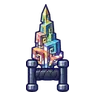 คาทาร์ผลึกบิสมัท | 0.12% |
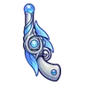 ปืนพกคู่ดาวหาง | 0.12% |
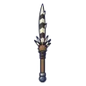 หอกขนเม่นยักษ์ | 0.12% |
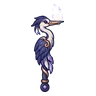 คบเพลิงนกกระสาเงา | 0.12% |